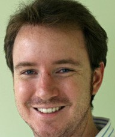
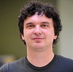

Wikipedia, a Social Pedia: Research Challenges and Opportunities
Workshop at ICWSM 2015
Invited Speakers
Cristian Danescu-Niculescu-Mizil (Cornell University)
Language and Online Social Dynamics
Abstract: More and more of life is now manifested online, and many of the digital traces that are left by human activity are in natural-language format. In this talk I will show how exploiting these resources under a computational framework can bring a new understanding of online social dynamics; I will be discussing two of my efforts in this direction that use the Wikipedia community of editors as case studies. The first project leverages insights from psycho- and socio-linguistics and embeds them into a novel computational framework in order to provide a new understanding of how key aspects of social relations between individuals are embedded in (and can be inferred from) their conversational behavior. In particular, I will discuss how power differentials between interlocutors are subtly revealed by how much one individual immediately echoes the linguistic style of the person they are responding to. The second project proposes a computational framework for identifying and characterizing politeness, a central force shaping our communication behavior. I will show how this framework can be used to study the social aspects of politeness, revealing new interactions with social status and community membership.
Bio: Cristian is an assistant professor in the information science department at Cornell University. His research aims at developing computational frameworks that can lead to a better understanding of human social behavior, by unlocking the unprecedented potential of the large amounts of natural language data generated online. His work tackles problems related to conversational behavior, opinion mining, computational semantics and computational advertising. He is the recipient of several awards, including the WWW 2013 Best Paper Award and a Yahoo! Key Scientific Challenges award, and his work has been featured in popular-media outlets such as the New Scientist, NBC's The Today Show, NPR and the New York Times.
Brent Hecht (University of Minnesota)
Mining and Applying Diverse Perspectives in Wikipedia
Abstract: Wikipedia has become an indispensable source of world knowledge for systems and algorithms in domains ranging from information visualization to artificial intelligence. In this talk, I will present new results that demonstrate that Wikipedia reflects the cultural diversity of its contributors to a previously unidentified extent and that this diversity has important implications for Wikipedia-based technologies. I will show how Wikipedia diversity can be extracted and measured using diversity mining algorithms and techniques from geographic information science, and I will discuss new methods that need to be developed for doing this in the Wikidata age. Finally, through two novel applications – Omnipedia and Atlasify – I will highlight the exciting potential for a new class of technologies enabled by the ability to harvest diverse perspectives from Wikipedia.
Bio: Brent is an assistant professor of computer science and engineering at the University of Minnesota. He received a Ph.D. in computer science from Northwestern University, a Master's degree in geography from UC Santa Barbara, and dual Bachelor's degrees in computer science and geography from Macalester College. He was a keynote speaker at WikiSym – the premiere conference on wikis and open collaboration – and has received awards for his research at top-tier publication venues in human-computer interaction and geography (e.g. ACM CHI, COSIT). He has collaborated with Google Research, Xerox PARC, and Microsoft Research, and his work has been featured in the Wall Street Journal, MIT Technology Review, New Scientist, AllThingsDigital, ACM TechNews, and various international TV, radio, and Internet outlets.
Brian Keegan (Harvard Business School)
First Among Equals: The Emergence and Evolution of Wikipedia's Policy Regime
 Abstract: Wikipedia is not only an encyclopedia that anyone can edit, it is also an online community governed by an extensive set of formal policies and guidelines. Like other Wikipedia articles, these rules are not fixed but subject to on-going revision and discussion. Contemporary concerns about online harassment campaigns have put a spotlight on the extent to which these rule-making processes are relevant, legitimate, and effective in regulating the behavior of its members. In this talk, I explore the emergence and evolution of Wikipedia's jurisprudence by analyzing changes over time in (1) the editing and discussion activity on these pages, (2) the networks of these policies' references to each other, and (3) the coauthorship patterns among these and other administrative pages on Wikipedia. I compare these findings to examples of changes in the structure of other legal codes and discuss the implications for recruiting new members, resisting oligarchical tendencies, and sustaining distributed governance.
Bio: Brian is a research associate and data scientist at the Harvard Business School. His research there examines how to promote participation and interaction on the HBX online learning platform. He was previously a post-doctoral research fellow in computational social science with David Lazer at Northeastern University analyzing the dynamics of Wikipedia activity around elections for developing predictive models. His dissertation at Northwestern University's School of Communication examined the dynamic networks and novel roles which support Wikipedia's rapid coverage of breaking news events like natural disasters. His research has been featured on FiveThirtyEight, NPR, and The Atlantic.
Magnus Manske (Wellcome Trust Sanger Institute)
Wikidata: Beyond Wikipedia
Abstract: Wikidata is a machine-readable repository of data that is emerging as a hub for various applications. It represents a superset of all Wikipedia editions with 14 million items, most of which are linked to respective Wikipedia articles. At 60 million high-quality statements, it combines knowledge of many aspects, including temporal, geographic, and authority control data. Several search and query systems allow for fine-grained data retrieval, a vast improvement over the Wikipedia category system. This talk aims to give a brief overview of Wikidata, and show many examples of both using and improving Wikidata, including querying, visualisations, and gamification.
Bio: Magnus is a Senior Staff Scientist at the Wellcome Trust Sanger Institute in Cambridge, UK, and a software developer of one of the first versions of the MediaWiki software. As a student Magnus was one of the first contributors to the Internet encyclopedia Nupedia, the precursor to Wikipedia, and later wrote one of the first versions of the MediaWiki software that Wikipedia runs on. Magnus is recognized as the creator of the first article in the German Wikipedia, which was on the polymerase chain reaction. Jimmy Wales in 2002 named January 25 as Magnus Manske Day in honor of his contributions to Wikipedia, proclaiming that "Tonight at dinner, every Wikipedian should say a toast to Magnus and his many inventions."
Dario Taraborelli (Wikimedia Foundation)
The Sum of All Human Knowledge in the Age of Machines: A New Research Agenda for Wikimedia
 Abstract: In 2015, you can ask a search engine how long goats live and get a straight answer: 15-18 years. Search engines have become, by and large, answer engines. Hypertext links and citations – historically, the backbone of verifiability – are losing ground against algorithmic answers, powered by proprietary knowledge bases. The need of human curation is shrinking as machines get better at solving complex tasks. The very way in which people access online information is massively shifting from long-form content consumption to “information snacking” of short-form content on mobile or wearable devices. In this talk, I’ll discuss the challenges Wikipedia is facing under the pressure of these changes. I’ll argue that these changes call for a new research agenda for this community, to help the Wikimedia movement rethink the role of collaboratively created, human knowledge in the age of machines.
Bio: Dario is an Italian behavioral scientist and social computing researcher based in San Francisco, currently serving as the Research and Data lead at the Wikimedia Foundation, the non-profit that runs Wikipedia. His research spans the behavioral and social aspects of online collaboration and commons-based peer production. As a co-author of the altmetrics manifesto and an Open Access advocate, he is interested in designing open data ecosystems to track the broader impact of research artifacts and promote their reuse. Prior to joining the Wikimedia Foundation, Dario held postdoctoral positions at University College London and the University of Surrey as well as teaching positions at Sciences Po and the École Normale Supérieure in Paris. He received a PhD in Cognitive Science from the École des Hautes Études en Sciences Sociales and a MA in Philosophy of Science from the University of Pisa. His work has been featured in various outlets such as the Guardian, the Wall Street Journal, TechCrunch, and the Times Higher Education.